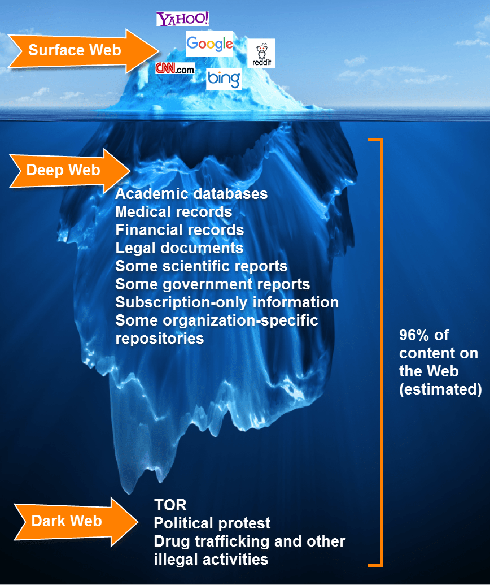

網絡盛行的年代，你真的認為你夠熟悉網絡嗎？在這龐大的網絡世界裡，有些地方你沒去過，也一輩子都不該去。本篇將會介紹你可能不知道的地下網絡 - 「 暗網 」。
# 前言
生活在一個網路充斥著生活的時代，使用網路對每個人來說已經是家常便飯，但如果我說其實你平常所能使用到的網絡及你能透過 Google 所搜尋到的所有東西都只佔了不到網絡世界的 5％，那你會好奇其他的 95％去了哪裡嗎？
另外，許多人會誤會「 暗網 」是指某個網頁，但實際上這個詞是一個廣泛的分類，並非是指某個網站，至於什麼樣的網絡會被分類在暗網，以下帶你一探究竟。
# 深網 與 暗網 的差別
首先，必須先強調一點，就是深網不完全等於暗網！
在了解兩者差異之前，在此先提個單字 -「Surface Web (表網)」。
「 表網 」全稱「 表層網絡 」，即一般人們使用的網絡，包括 Facebook、Google、Youtube 等常見的知名服務，以及本站，甚至其他你在 Google 上能搜尋到的所有站點，都屬於表網。
而 Deep Web (深網) 則主要可以泛指所有在表網上搜尋不到的網絡。
那... 什麼是暗網？
「 Dark Web (暗網) 」涵蓋在深網中，比起深網來說，暗網才算是真正的隱藏，不僅僅是搜尋引擎搜索不到，而是即使有了網址，也無法透過一般的瀏覽器來訪問，是深網中的底層網絡，沒錯，深網已經是在網絡世界之下的底層網絡，而這所謂的暗網則是網絡世界中底層網絡中的底層網絡！
以下這張圖或許可以讓你更了解它們之間的比例關係。

這塊浮冰用來當作整個網絡世界，在水面上的部份為表網，約佔了整個網絡世界的 4％ ，其餘在水面下的隱藏網絡皆為 Deep Web (深網) ，約佔 96％ ，而涵蓋在深網中，底層的那些網絡即稱之為 Dark Web (暗網) ，約佔深網 96％ 中的 6％ 。
# Dark Web (暗網)
正因為有技術可以在網路上做到隱藏、匿蹤的效果，有心人士便開始浮出水面，因此暗網裡充斥著許多非法的服務，例如 毒品交易、槍支交易、僱用殺手服務、兒童色情、洗錢、邪教論壇、屠殺視頻、偽造護照服務、人口販賣 等，當然也有比較正常的服務，例如 加密信箱、匿名論壇、加密聊天 等。
# P2P 對等式網絡
上述中跟各位提到暗網「 即使有了網址，也無法透過一般的瀏覽器來訪問 」，不論是表網還是一般的深網都還可以透過你所使用的 Chrome、Firefox、Opera 等一般的瀏覽器來連接伺服器，但暗網可不行。
暗網之所以能達到隱藏的效果則是因為暗網使用的是「Peer-To-Peer (對等式網絡)」，也就是俗稱的「 點對點、P2P 」。
這邊簡單的介紹一下，一般來說正常的網絡都會有個「 中心伺服器 」(如下圖)，可以方便且快速的讓我們訪問其他站點。

而 P2P 則是無中心伺服器的，每個用戶都是一個節點，並且這些節點彼此之間是不能直接聯繫的，當某節點 A 架設一個伺服器，而某節點 B 想要訪問節點 A 時，並非直接的訪問，而是透過兩者之間的節點幫忙傳送，會透過很多層的節點後，最後才到目標，例如「B > T > C > ... > Y > A」。
由於傳輸過程中使用多個節點，因此犧牲掉了訪問速度，如果網速不好的狀況去瀏覽暗網，真的會等到睡著... ，但多節點確實提高了反追蹤的特性，也因此暗網常常是令 FBI 頭痛的罪犯溫床。
這其實有點像是小學時，上課傳紙條的概念，當你坐在最後一排，想傳紙條給第一排的同學時，如果直接親手交給他，則很容易被老師 (司法者) 抓到，因此必須借助中間同學的幫忙，一個一個傳，等紙條到了目標手中，即使老師發現了，也很難追問是誰傳的，因為節點並非固定的，就好像學生隨時都在換座位一樣。

# Tor (洋蔥路由)
上述所提到的 P2P 當中，一個有名的例子就是「 Tor 」，全名「 The Onion Router 」(洋蔥路由)，為自由軟體，用戶們可以使用 Tor 連接來自全球使用者免費提供的節點。Tor 的設計原意在於保障用戶的個人隱私，以及不受監控地進行秘密通信的自由和能力。
Tor 在傳送資料時，會對下一個節點的資料、IP 位址進行多次的加密，並隨機選擇 Tor 節點傳送，每個中繼都會對一層加密的資料進行解密，以知道資料的下一個傳送目的地，然後將剩餘的加密資料傳送給它。最後的中繼會解密最內層的加密資料，並在不會洩露或得知源 IP 位址的情況下，將原始資料發送至目標位址。
一層一層的加密就好像洋蔥般，因此稱為洋蔥路由。
而基於 Tor 技術所開發的瀏覽器「 Tor Browser (Tor 瀏覽器) 」也是目前廣泛被大家使用在訪問暗網的瀏覽器。
20 世紀 90 年代，互連網缺乏安全性，以及用於跟蹤及監視的能力越來越明顯。1995 年，美國海軍研究實驗室 United States Naval Research Laboratory (NRL) 的數學家 Paul Syverson (保羅・西維森) 、電腦科學家 G. Mike Reed (邁克・里德) 及 David Goldschlag (大衛・戈爾德施拉格) 為保護美國情報通信而開發了該軟體。
有個專門用於 Tor 網絡的頂級域「 .onion 」，這種域名並未被收錄在域名根區中，並不屬於實際的域名，但透過特殊的代理軟體即可訪問 .onion 的地址，例如上述的 Tor Browser (Tor 瀏覽器)。因此若是看到有人貼的網址中頂級域是「.onion」那麼通常就是隱藏網絡，需要使用特殊瀏覽器來訪問，一般的瀏覽器僅會顯示地址不存在。
# Bitcoin (比特幣、BTC)
剛剛說到暗網中有著許多非法的交易，而這些交易當然也不可能用銀行轉帳，不然就失去了匿蹤的意義了，通常暗網上的交易都是由「Bitcoin (比特幣)」來支付的，比特幣為一種「加密貨幣」，由於怕離題的緣故，因此就不講解相關原理了，有興趣的朋友麻煩請點擊超連結觀看或是自行搜尋相關資料。
若你已經了解什麼是 Bitcoin (比特幣) 並且知道其中的原理，那麼應該也不難理解為什麼暗網中的騙子很多，主要是因為比特幣本身是沒有保障的，一切的交易僅能靠雙方對彼此的信任，再加上暗網本身的匿蹤特性，詐騙根本沒在怕被抓的。
# Mariana's Web (馬里亞納網絡) (未證實，都市傳說)
「 Mariana's Web (馬里亞納網絡) 」號稱是暗網的最深處，其命名也是以世界上目前發現已知最深的海溝「馬里亞納海溝」來命名的，象徵著在這連光都透不進的海溝裡，潛下去，就再也不用想著浮出水面。
據說
進入馬里亞納網絡需要使用 量子電腦 來運算一個名為「 Polymeric Falcighol Derivation 」的數學函式，這是一種複雜的演算法 (但網路上似乎找不到該名詞相關有依據的報告)，並且使用的頂級域是「 .clos 」、「 .loky 」及「 .marianas 」。
馬里亞納網絡的盡頭存放著許多世界機密，甚至有不少人認為這些機密文件中，有著可以改變世界的祕密，例如 操控時間的方法、宇宙的由來、亞特蘭提斯的祕密、外星人的相關資料 等，甚至有人說其實整個馬里亞納網絡就是一個 AI (人工智慧) 。
有另外一種說法是，馬里亞納網絡的盡頭其實是一個名為「 Devil Mate (魔鬼的同伴) 」的論壇，該論壇無人道可言，論壇的管理員都是一些社會上頂尖的成功人士，這群人有著可怕的財富及權利，需要有邀請碼才得以加入會員，否則什麼內容也看不到，這些帖子通常會被隱藏或是顯示成亂碼，即便加入會員後，也無法馬上觀看內容，因為該論壇將會員分成 1～66 個等級，等級越高，所能看到的內容越多，而提升等級的唯一方法就是完成該論壇所規定的任務，他們稱作「儀式」....
這些任務充滿著不人道的要求，一開始可能只是要求你生吞豬心、殺死貓狗、自殘、喝鴨血、喝處女的血，隨著等級越來越高，任務也越來越極端，開始出現例如 殺死一個人、與屍體性交、活生生的挖出某人的眼睛 等，一切任務都隨管理員的心情出題，完成任務的過程需要拍攝照片、影片回報，論壇等級提升後即可獲得獎勵，大筆的獎金及觀看更多論壇帖子的權限，而在獲得獎勵的同時，你也正在一步步的奉獻自己的靈魂給這群惡魔。
當然！
關於 Mariana's Web (馬里亞納網絡) 的一切都是謠言，未證實過的，看看就好。
# 著名的網站
下一篇文章中，介紹了 4 個在暗網中非常著名的網站，有些甚至到了今天，服務仍正常在運作中，歡迎觀看「(18+) 浮出水面的 4 個知名暗網」。